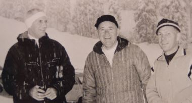

|
 |
Businessmen enter bid for Ski DevelopmentIdaho Statesman April 11, 1961 |
|
Pictured, left to right: Warren Brown, Jack Simplot, and Corey Engen who developed Brundage Mountain ski hill 1961. As part of the deal they also bought 48% of Shore Lodge. |